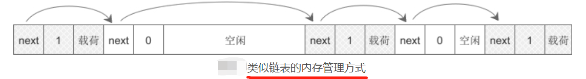
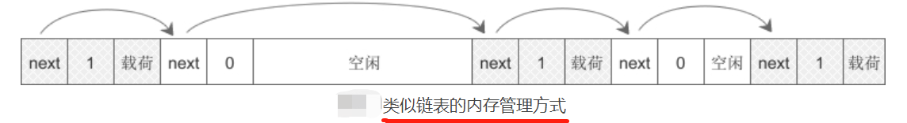

【本文结构】
- 15、C语言动态内存分配
- 16、malloc函数的实现原理 —— 内存池
- 17、C语言野指针和非法内存操作
- 18、C语言内存泄漏（内存丢失）
- 19、变量的存储类别和生存周期
- 静态内存分配 和 动态内存分配
- 静态内存分配
- 在进程的地址空间中，代码区、常量区、全局数据区的内存在程序启动时就已经分配好了，它们大小固定，不能由程序员分配和释放，只能等到程序运行结束由操作系统回收。这称为静态内存分配。
- 动态内存分配
- 栈区和堆区的内存在程序运行期间可以根据实际需求来分配和释放，不用在程序刚启动时就备足所有内存。这称为动态内存分配。
- 比较
- 静态内存的优点是速度快，省去了向操作系统申请内存的时间，缺点就是不灵活，缺乏表现力，例如不能控制数据的作用范围，不能使用较大的内存。
- 动态内存可以让程序对内存的管理更加灵活和高效，需要内存就立即分配，而且需要多少就分配多少，从几个字节到几个GB不等；不需要时就立即回收，再分配给其他程序使用。
- 栈和堆的区别
- 栈区和堆区的管理模式有所不同：
- 栈区内存由系统分配和释放，不受程序员控制；
- 程序启动时会为栈区分配一块大小适当的内存，对于一般的函数调用这已经足够了，函数进栈出栈只是 ebp、esp 寄存器指向的变换，或者是向已有的内存中写入数据，不涉及内存的分配和释放。
- 当函数中有较大的局部数组时，比如 1024*10 个元素，编译器就会在函数代码中插入针对栈的动态内存分配函数，这样函数被调用时才分配内存，不调用就不分配。
- 我们经常听说“栈内存的分配效率要高于堆”就是这个道理，因为大部分情况下并没有真的分配栈内存，仅仅是对已有内存（程序启动时为栈分配的那块）的操作。
- 堆区内存完全由程序员掌控，想分配多少就分配多少，想什么时候释放就什么时候释放，非常灵活。
- 动态内存分配函数
动态内存函数 | 函数原型 | 功能 | 返回值 | 注意事项 |
malloc() | void* malloc (size) | 在堆区分配 size 字节的内存空间。 | 成功则返回分配的内存地址， 失败则返回NULL。 | 分配内存在动态存储区（堆区），手动分配，手动释放； 申请时空间可能有也可能没有，需要自行判； 由于返回的是void*，建议手动强制类型转换。 |
calloc() | void* calloc(n, size) | 在堆区分配 n*size 字节的连续空间。 | 成功则返回分配的内存地址， 失败则返回NULL。 | calloc() 函数是对 malloc() 函数的简单封装，参数不同，使用时务必小心， 第一参数是第二参数的单元个数，第二参数是单位的字节数。 |
realloc() | void* realloc(void *ptr, size) | 对 ptr 指向的内存重新分配 size 大小的空间，size 可比原来的大或者小。 | 成功则返回更改后的内存地址， 失败则返回NULL。 | |
free() | void free(void* ptr) | 释放由 malloc()、calloc()、realloc() 申请的内存空间。 |
- 几点注意
- 每个内存分配函数必须有相应的 free 函数，释放后不能再次使用被释放的内存。
- 在分配内存时最好不要直接用数字指定内存空间的大小，这样不利于程序的移植。因为在不同的操作系统中，同一数据类型的长度可能不一样。为了解决这个问题，C语言提供了一个判断数据类型长度的操作符，就是 sizeof。
- free(p) 并不能改变指针 p 的值，p 依然指向以前的内存，为了防止再次使用该内存，建议将 p 的值手动置为 NULL。
#include <stdio.h>
#include <stdlib.h>
#define N_5 (5)
#define N_7 (7)
#define N_3 (3)
int main()
{
int *ip;
int *large_ip;
int *small_ip;
if( (ip = (int*)malloc(N_5 * sizeof(int) )) == NULL)
{
printf("memory allocated failed!\n");
exit(1);
}
int i;
for(i = 0; i < N_5; i++)
{
ip[i] = i;
printf("ip[%d] = %d\t", i, ip[i]);
}
printf("\n");
if( (large_ip = (int*)realloc(ip, N_7 * sizeof(int) )) == NULL)...
if( (small_ip = (int*)realloc(large_ip, N_3 * sizeof(int) )) == NULL)...
free(small_ip);
system("pause");
return 0;
}
- malloc() 在堆上分配内存有哪些实现思路
- 相对于栈而言，堆这片内存面临着一个稍微复杂的行为模式：在任意时刻，程序可能发出请求，要么申请一段内存，要么释放一段已经申请过的内存，而且申请的大小从几个字节到几个GB都有可能，我们不能假设程序一次申请多少堆空间，因此，堆的管理显得较为复杂。
- 那么，使用 malloc() 在堆上分配内存到底是如何实现的呢？
- 一种做法是把 malloc() 的内存管理交给系统内核去做，
- 既然内核管理着进程的地址空间，那么如果它提供一个系统调用，可以让 malloc() 使用这个系统调用去申请内存，不就可以了吗？
- 当然这是一种理论上的做法，但实际上这样做的性能比较差，因为每次程序申请或者释放堆空间都要进行系统调用。我们知道系统调用的性能开销是比较大的，当程序对堆的操作比较频繁时，这样做的结果会严重影响程序的性能。
- 比较好的做法就是 malloc() 向操作系统申请一块适当大小的堆空间，然后由 malloc() 自己管理这块空间。
- malloc() 相当于向操作系统“批发”了一块较大的内存空间，然后“零售”给程序用。
- 当全部“售完”或程序有大量的内存需求时，再根据实际需求向操作系统“进货”。
- 当然 malloc() 在向程序零售堆空间时，必须管理它批发来的堆空间，不能把同一块地址出售两次，导致地址的冲突。
- 于是 malloc() 需要一个算法来管理堆空间，这个算法就是堆的分配算法。
- malloc() 和 free()的分配算法
- 在程序运行过程中，堆内存从低地址向高地址连续分配，随着内存的释放，会出现不连续的空闲区域，如下图所示：
- 程序需要内存时，malloc() 首先遍历空闲区域，看是否有大小合适的内存块，如果有，就分配，如果没有，就向操作系统申请（发生系统调用）。
- 为了保证分配给程序的内存的连续性，malloc() 只会在一个空闲区域中分配，而不能将多个空闲区域联合起来。

- 阴影的方框是已被分配的内存，白色方框是空闲内存或已被释放的内存。
- 内存块（包括已分配和空闲的）的结构类似于链表，它们之间通过指针连接在一起。在实际应用中，一个内存块的结构如下图所示：
 
- next 是指针，指向下一个内存块，used 用来表示当前内存块是否已被使用。
- malloc() 和 free() 所做的工作主要是对已有内存块的分拆和合并，并没有频繁地向操作系统申请内存，这大大提高了内存分配的效率。
- 由于单向链表只能向一个方向搜索，在合并或拆分内存块时不方便，所以大部分 malloc() 实现都会在内存块中增加一个 pre 指针指向上一个内存块，构成双向链表：

- 链表式内存管理虽然思路简单，容易理解，但存在很多问题，例如：
- 一旦链表中的 pre 或 next 指针被破坏，整个堆就无法工作，而这些数据恰恰很容易被越界读写所接触到。
- 小的空闲区域往往不容易再次分配，形成很多内存碎片。
- 经常分配和释放内存会造成链表过长，增加遍历的时间。
- 针对链表的缺点，后来人们提出了位图和对象池的管理方式，而现在的 malloc() 往往采用多种方式复合而成，不同大小的内存块往往采用不同的措施，以保证内存分配的安全和效率。
- 内存池
- 内存池（Memory Pool）： 不管具体的分配算法是怎样的，为了减少系统调用，减少物理内存碎片，malloc() 的整体思想是先向操作系统申请一块大小适当的内存，然后自己管理，这就是内存池 。
- 内存池的研究重点不是向操作系统申请内存，而是对已申请到的内存的管理，
- 这涉及到非常复杂的算法，是一个永远也研究不完的课题，除了C标准库自带的 malloc()，还有一些第三方的实现，比如 Goolge 的 tcmalloc 和 jemalloc。
- 我们知道，C/C++是编译型语言，没有内存回收机制，程序员需要自己释放不需要的内存，这在给程序带来了很大灵活性的同时，也带来了不少风险，
- 例如C/C++程序经常会发生内存泄露，程序刚开始运行时占用内存很少，随着时间的推移，内存使用不断增加，导致整个计算机运行缓慢。
- 内存泄露的问题往往难于调试和发现，或者只有在特定条件下才会复现，这给代码修改带来了不少障碍。
- 为了提高程序的稳定性和健壮性，后来的 Java、Python、C#、JavaScript、PHP 等使用了虚拟机机制的非编译型语言都加入了垃圾内存自动回收机制，这样程序员就不需要管理内存了，系统会自动识别不再使用的内存并把它们释放掉，避免内存泄露。可以说，这些高级语言在底层都实现了自己的内存池，也即有自己的内存管理机制。
- 池化技术
- 在计算机中，有很多使用“池”这种技术的地方，除了内存池，还有连接池、线程池、对象池等。
- 以服务器上的线程池为例，它的主要思想是：先启动若干数量的线程，让它们处于睡眠状态，当接收到客户端的请求时，唤醒池中某个睡眠的线程，让它来处理客户端的请求，当处理完这个请求，线程又进入睡眠状态。
- 所谓“池化技术”，就是程序先向系统申请过量的资源，然后自己管理，以备不时之需。之所以要申请过量的资源，是因为每次申请该资源都有较大的开销，不如提前申请好了，这样使用时就会变得非常快捷，大大提高程序运行效率。
【17 C语言野指针和非法内存操作】
- 野指针（Wild Pointer）： 如果一个指针指向的内存没有访问权限，或者指向一块已经释放掉的内存，那么就无法对该指针进行操作，这样的指针称为野指针。
- 指向没有访问权限的内存

- 在GCC下运行，输入一个字符串后会提示“段错误（Segment Fault）”。
- 在VS下运行，输入一个字符串后会提示类似下面的错误：

- 这是因为，str 是局部变量，它的值是不确定的，是随机的，不知道指向哪块内存。
- 一般情况下，这块内存要么没有访问权限，要么还没有分配，当 gets() 函数试图将读取到的字符串写入这块内存时，必然会发生错误。
- 当然，如果足够幸运的话，str 也可能恰好指向一段分配好的、并且有读写权限的内存，程序就运行成功了，但这是小概率事件，一般不会发生。
- 指向释放掉的内存
- 指向释放掉的堆内存

- 运行程序，第一次输出C语言中文网，第二次输出的是乱码或者什么也不输出。这是因为，freed() 只是释放掉了动态分配的内存，但并未改变 str 的值，str 的值不是 NULL，它仍然指向被释放掉的内存，所以会执行 if 语句里面的 puts() 函数。但由于此时的内存已经被释放掉了，原来的字符串已经不在了，所以输出的数据是未知的。
- 这提醒我们，使用 free() 释放内存的同时要将指针置为NULL，否则下次就无法判断指向的内存是否有效。
- 函数外部指针指向函数内部的变量 —— 指向释放掉的栈内存

- arr 数组在栈上分配内存，字符串"C语言中文网"就存储在这里，func() 函数运行结束后，这块内存被释放掉，但是函数外部的 pstr 仍然指向这里，所以执行puts(pstr);时，输出结果是未知的。
- 规避野指针
- 要想规避野指针，就要养成良好的编程习惯：
- 指针变量如果暂时不需要赋值，一定要初始化为NULL，因为任何指针变量刚被创建时不会自动成为NULL指针，它的缺省值是随机的。
- 当指针指向的内存被释放掉时，要将指针的值设置为 NULL，因为 free() 只是释放掉了内存，并为改变指针的值。
- 内存泄露（Memory Leak）：
- 使用 malloc()、calloc()、realloc() 动态分配的内存，如果没有指针指向它，就无法进行任何操作，这段内存会一直被程序占用，直到程序运行结束由操作系统回收。 这就是内存泄露，可以理解为程序和内存失去了联系，再也无法对它进行任何操作。
- 内存泄漏形象的比喻是“操作系统可提供给所有程序使用的内存空间正在被某个程序榨干”，最终结果是程序运行时间越长，占用内存空间越来越多，最终用尽全部内存空间，整个系统崩溃。
- 总结
- free() 函数的用处在于实时地回收内存，如果程序很简单，程序结束之前也不会使用过多的内存，不会降低系统的性能，那么也可以不用写 free() 函数。当程序结束后，操作系统会释放内存。
- 但是如果在开发大型程序时不写 free() 函数，后果是很严重的。这是因为很可能在程序中要重复一万次分配10MB的内存，如果每次进行分配内存后都使用 free() 函数去释放用完的内存空间， 那么这个程序只需要使用10MB内存就可以运行。但是如果不使用 free() 函数，那么程序就要使用100GB 的内存！这其中包括绝大部分的虚拟内存，而由于虚拟内存的操作需要读写磁盘，因此，这样会极大地影响到系统的性能，系统因此可能崩溃。
- 因此，在程序中使用 malloc() 分配内存时都对应地写出一个 free() 函数是一个良好的编程习惯。这不但体现在处理大型程序时的必要性，并能在一定程度上体现程序优美的风格和健壮性。
- 变量的存储类型
- 除了数据类型，变量还有一个属性，称为“存储类别”。 C语言共有 4 个关键字用来指明变量的存储类别：
- auto（自动的）
- static（静态的）
- register（寄存器的）
- extern（外部的）—— 这个将在模块化开发中讲
- 知道了变量的存储类别，就可以知道变量的生存期。通俗地讲，生存期指的是在程序运行过程中，变量从创建到销毁的一段时间，生存期的长短取决于变量的存储类别，也就是它所在的内存区域。
- 一个变量只能声明为一种存储类别。

- auto 变量
- auto 是自动或默认的意思，很少用到，因为所有的变量默认就是 auto 的。定义变量时加不加 auto 都一样。
// 下面两个语句的效果是完全是一样的
int n = 10;
auto int n = 10;
- static 变量
- static 声明的变量称为静态变量，不管它是全局的还是局部的，都存储在静态数据区
- 全局变量本来就存储在静态数据区，即使不加 static。
- 静态数据区的数据在程序启动时就会初始化，直到程序运行结束；对于代码块中的静态局部变量，即使代码块执行结束，也不会销毁。
- 注意：静态数据区的变量只能初始化（定义）一次，以后只能改变它的值，不能再被初始化，即使有这样的语句，也无效。
- 静态局部变量虽然存储在静态数据区，但是它的作用域仅限于定义它的代码块。

- register 变量
- 一般情况下，变量的值是存储在内存中的，CPU 每次使用数据都要从内存中读取。如果有一些变量使用非常频繁，从内存中读取就会消耗很多时间，
- 例如 for 循环中的增量控制：

- 为了解决这个问题，可以将使用频繁的变量放在CPU的通用寄存器中，这样使用该变量时就不必访问内存，直接从寄存器中读取，大大提高程序的运行效率。
- 不过寄存器的数量是有限的，通常是把使用最频繁的变量定义为 register 的。

- 关于寄存器变量有以下事项需要注意：
- 为寄存器变量分配寄存器是动态完成的，因此，只有局部变量和形式参数才能定义为寄存器变量。
- 局部静态变量不能定义为寄存器变量，因为一个变量只能声明为一种存储类别。
- 寄存器的长度一般和机器的字长一致，只有较短的类型如 int、char、short 等才适合定义为寄存器变量，诸如 double 等较大的类型，不推荐将其定义为寄存器类型。
- CPU的寄存器数目有限，即使定义了寄存器变量，编译器可能并不真正为其分配寄存器，而是将其当做普通的auto变量来对待，为其分配栈内存。当然，有些优秀的编译器，能自动识别使用频繁的变量，如循环控制变量等，在有可用的寄存器时，即使没有使用 register 关键字，也自动为其分配寄存器，无须由程序员来指定。